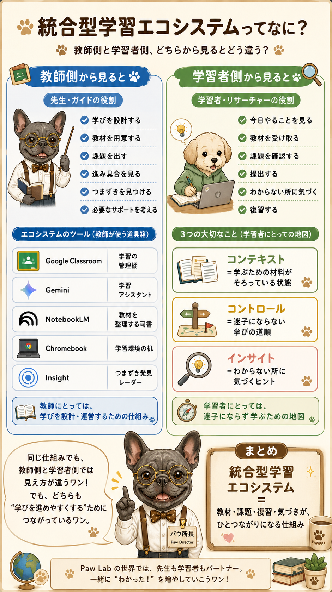
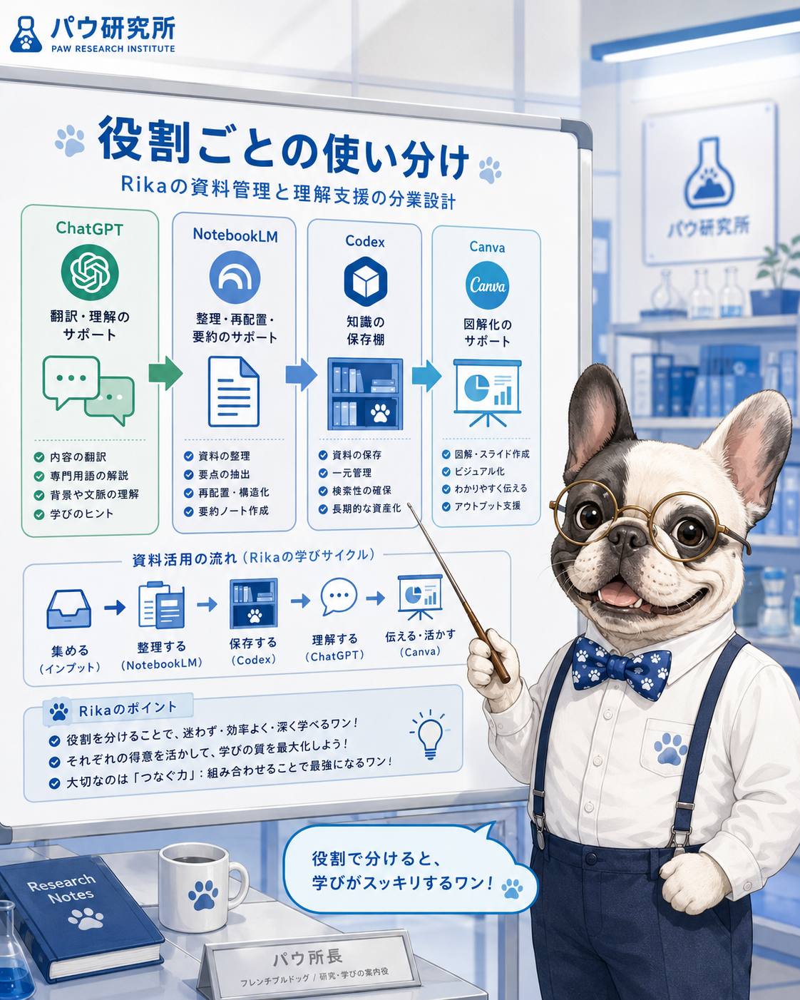
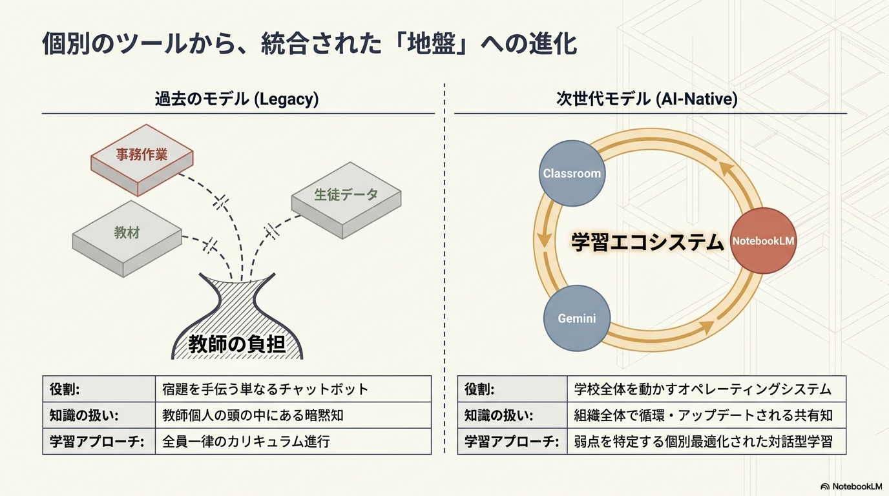
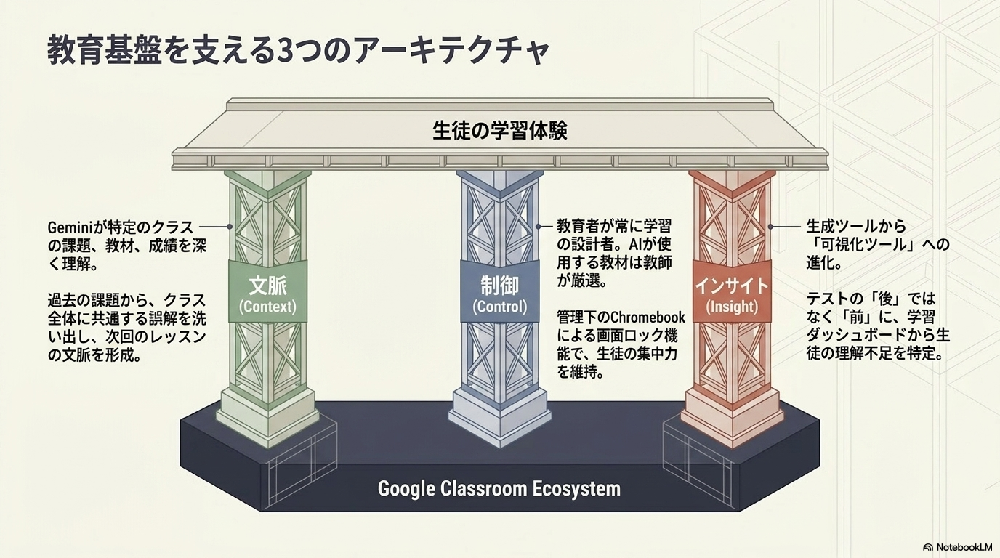
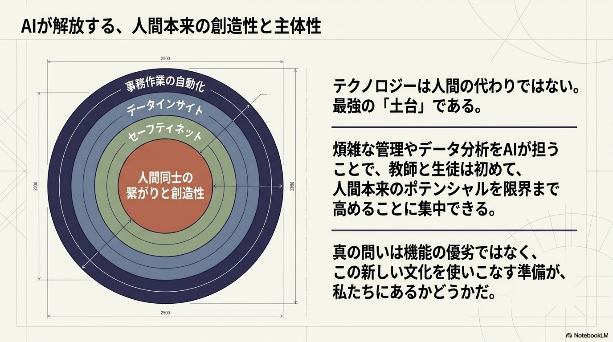

設計・管理・評価する場所
授業を設計し、教材を配り、課題を出し、提出状況を見て、評価するための場所として見える。
Learning OS｜Human OS Observation｜2026.07.10
Google Classroomがなかなか頭に入ってこなかった理由を、専門用語の問題だけではなく、「どの立場から語られている言葉なのか」という視点から見直した観察ログです。
Codexへ戻るBackground
Google Classroom、Gemini、NotebookLM、Chromebookがつながる「統合型学習エコシステム」という話は、最初はうまく輪郭をつかめなかった。
記事の内容をChatGPTに整理してもらい、NotebookLMにも読み込ませて、音声やフラッシュカードにもしてみた。それでも、まだどこかふわっとした感覚が残っていた。
さらに図解にして、パウ研究所の世界にも置き換えてみた。DMM生成AI CAMPの仕組みとも比較してみた。それでも、まだ完全には自分の中に入ってこない感じがあった。
そこでようやく気づいた。私が読んでいた説明は、ほとんどが教師側、講師側、運営側から見た言葉だったのかもしれない。私は今、DMMで講座を受け、NotebookLMで復習し、ChatGPTと対話し、Codexに残している学習者側の人間だ。
だから、生徒側・学習者側の視点に置き換えて翻訳してもらったとき、少しずつ頭に入ってきた。統合型学習エコシステムとは、上から見た管理システムの話だけではなく、学ぶ人が迷子にならないために、教材、課題、復習、つまずきのヒントがひとつながりになる仕組みなのかもしれないと感じた。
Observation
昨日の「専門用語が難しい」問題と、今日の「Google Classroomが入ってこない」問題は、根っこが少し似ているのかもしれない。
難しかったのは、言葉そのものだけではなく、その言葉が誰の立場から語られているのかが見えていなかったことなのだと思う。
ぼやけていた輪郭が少しだけ見えてきた段階で、すぐに定義カードのようにカチッと整理されると、かえって自分の体感から離れてしまうことがある。だから今回は、まだ定義に押し込まず、理解がほどけ始めた瞬間の記録として残しておきたい。
Same Tool, Different Seat
授業を設計し、教材を配り、課題を出し、提出状況を見て、評価するための場所として見える。
今日やることを確認し、教材を受け取り、課題を見て、提出先を探し、復習するための場所として見える。
クラスや講座、教材、課題、連絡、進捗をまとめ、学習全体を運営するための仕組みとして見える。
教材や学習履歴、AI支援機能をつなぎ、教育向けのAI活用を広げるためのプラットフォームとして見える。
同じものを見ているはずなのに、立っている場所が違うと、見えている意味が少し変わる。
Learner Side Translation
ここで、ようやく少し腑に落ちた。私はGoogle Classroomの説明を、ずっと教師側・運営側の言葉として聞いていたのだと思う。でも私は今、DMM生成AI CAMPを受講し、NotebookLMで復習し、ChatGPTと対話し、Codexに残している「学習者側」の人間だ。
だから、教師側の言葉のままだと、自分の体感に入りにくかったのかもしれない。
コンテキストは、教材や情報をAIに渡すこと。コントロールは、先生が教材や使い方を決めること。インサイトは、生徒のつまずきを見える化すること。
コンテキストは「学ぶための材料がそろっている状態」。コントロールは「自分が迷子にならない学びの道順」。インサイトは「自分の分からないところに気づくヒント」。
Role Design
RikaさんのLearning OSでは、ツールを全部同じように使うのではなく、それぞれの役割を分けることで、学びが迷子になりにくくなるのかもしれない。
Driveは素材を置く場所、NotebookLMは資料を読み込んで整理する副編集長、ChatGPTは自分の言葉に翻訳する研究員、Canvaは図解にするデザイナー、Codexは気づきと制作ログを残す知の図書館。こうして役割を分けると、作業の出口が少し見えやすくなる。
Human OS Connection
同じ言葉でも、立場が変わると、受け取り方が変わる。これはSNSのコメント欄にも少し似ている。同じニュースを見ても、親として見る人、学ぶ側から見る人、教師として見る人、運営として見る人、会社員として見る人、クリエイターとして見る人、不安から見る人、結果主義で見る人、観察者として見る人では、反応が変わる。
同じ日本語を読んでいても、同じ意味で受け取っているとは限らない。その人がどの立場にいて、何を守りたいのか、何を不安に感じるのか、何を便利だと思うのかによって、言葉の意味は少しずつ変わる。
だから、専門用語を理解するというのは、単に定義を覚えることだけではないのかもしれない。その言葉が、誰の立場から語られているのか。どのOSから見た言葉なのか。自分の側の体感に翻訳すると、何になるのか。そこまで見えたとき、ようやく言葉が自分の中に入ってくるのだと思う。
Research Card Draft
教師側の言葉を、生徒側の体感に翻訳する
統合型学習エコシステムを、自分のLearning OSとして読み直す
Google ClassroomやGemini、NotebookLM、Chromebookがつながる統合型学習エコシステムの話は、最初はどこかふわっとしていた。記事を読み、ChatGPTで整理し、NotebookLMにも読み込ませ、図解にもしてみた。それでも、まだ自分の中に入ってこない感じがあった。
その理由は、資料の主語が教師側・学校側・運営側にあったからかもしれない。教師側から見ると、Google Classroomは授業を設計し、教材を配り、課題を出し、提出状況や理解度を見るための場所になる。でも学習者側から見ると、今日やることを確認し、教材を受け取り、課題を見て、提出し、復習するための場所として見えてくる。
同じツールでも、立つ場所が変わると意味が少し変わる。Context、Control、Insightという言葉も、教師側のままだと少し遠く感じる。でも学習者側に翻訳すると、Contextは「学ぶための材料がそろっている状態」、Controlは「自分が迷子にならない学びの道順」、Insightは「自分の分からないところに気づくヒント」として見えてきた。
今回の気づきは、教育AIの記事の理解だけでなく、Rika Creative CodexのLearning OSにもつながっていると思う。難しい資料は、まず誰の立場から語られているのかを見る。そのうえで、自分の側の体感に翻訳する。そこからようやく、言葉が自分の中に入ってくるのかもしれない。
Related Visual Cards
ここでは、今回の気づきを補助する図解カードを、ファイル名ではなく素材そのものとして表示します。


NotebookLM Reflection Materials
NotebookLMでスライド化した資料は、答えとして置くというより、Rikaさんが学習者視点に翻訳する前の観察素材として残しておく。



NotebookLM Source Set
NotebookLMに入れる前に、元記事だけではなく、Rikaさん視点の気づきとパウ研究所翻訳版をセットにしておく。そうすると、単なる記事要約ではなく、Rika研究員版の学習資料として育ちやすくなる。
Google Classroom、Gemini、NotebookLM、Chromebookが統合され、学校の学びを支えるエコシステムとして機能していくという内容。Context、Control、Insightが中心概念として扱われていた。
最初は記事を整理しても、NotebookLMに入れても、図解にしてもまだふわっとしていた。教師側・運営側の言葉として読んでいたから、自分の学習者側の体感に入ってこなかったのだと気づいた。
Contextは研究材料の棚、Controlは今日の研究ルート、Insightはつまずき発見レーダー。Google Classroomは学校の管理棚で、Rika Creative Codexは自分の知の図書館。
Rika Research Note
今回のGoogle Classroomの話は、教育AIの記事を理解するためだけの話ではなく、Rika Creative CodexやHuman OS研究にもつながる気づきだった。
同じ言葉でも、誰の立場から語られているかによって、意味の入り方が変わる。理解できなかったのは、言葉そのものではなく、自分の側の体感にまだ翻訳されていなかったからかもしれない。
先生席、生徒席、運営席では、同じ教室でも見える景色が違うワン。研究カードは、まだ形になりきっていない気づきの輪郭も大事に残すんだワン。